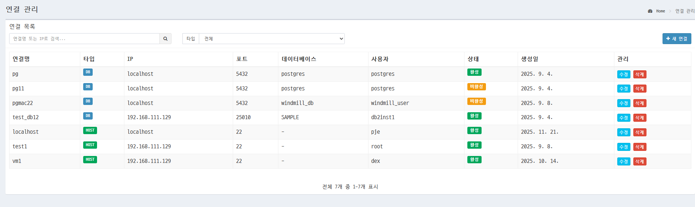
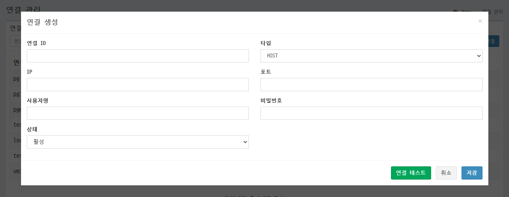

2. 연결관리
2.1 화면 구성
연결관리 화면은 데이터베이스 연결(DB)과 SFTP/SSH 연결(HOST)을 관리하는 화면입니다.

2.2 기능 설명
1. 검색 기능
- 연결명 또는 IP 주소로 검색 가능
- 실시간 검색 지원 (입력 후 500ms 대기)
- Enter 키로도 검색 가능
2. 타입 필터
- 전체: 모든 연결 표시
- DB: 데이터베이스 연결만 표시
- HOST: SFTP/SSH 연결만 표시
3. 연결 생성/수정
새 연결 버튼 또는 수정 버튼 클릭 시 연결 생성/수정 모달이 표시됩니다.
4. 연결 삭제
- 연결 목록에서 삭제 버튼 클릭
- 확인 메시지 후 삭제 수행
- 삭제된 연결은 더 이상 사용할 수 없습니다
2.3 모달
연결 생성/수정 모달

DB 연결 모달 필드
- 연결 ID: 연결의 고유 식별자 (영문, 숫자, 언더스코어만 사용 가능)
- 타입: DB 또는 HOST 선택
- IP: 서버 IP 주소 또는 호스트명
- 포트: 연결 포트 번호
- 상태: 활성/비활성/점검중
- 데이터베이스명: Oracle SID/Service Name, DB2 Database Name, PostgreSQL Database Name
- DB 타입: ORACLE, DB2, TIBERO, POSTGRESQL, MYSQL 중 선택
- 사용자명: 데이터베이스 접속 사용자
- 비밀번호: 데이터베이스 접속 비밀번호 (암호화 저장)
- JDBC 드라이버 파일: 기본 드라이버 외 특정 버전 드라이버 선택 (선택사항)
- 테스트 SQL: 연결 테스트 시 실행할 SQL (선택사항, 비워두면 기본 쿼리 사용)
- 모니터링 활성화: 대시보드에서 연결 상태 모니터링 여부
- 모니터링 간격: 연결 상태 확인 간격 (60-3600초, 기본값 300초)
- 연결 테스트 버튼: 입력한 연결 정보로 실제 연결을 테스트합니다. 테스트 결과가 모달 하단에 표시됩니다.
- 저장 버튼: 연결 정보를 저장합니다. 수정 모드에서는 기존 연결 정보가 업데이트됩니다.
- 취소 버튼: 모달을 닫고 변경사항을 저장하지 않습니다.

HOST 연결 모달 필드
- 연결 ID: 연결의 고유 식별자 (영문, 숫자, 언더스코어만 사용 가능)
- 타입: DB 또는 HOST 선택
- IP: 서버 IP 주소 또는 호스트명
- 포트: 연결 포트 번호
- 상태: 활성/비활성/점검중
- 사용자명: SFTP/SSH 접속 사용자
- 비밀번호: SFTP/SSH 접속 비밀번호 (암호화 저장)
- 저장 버튼: 연결 정보를 저장합니다. 수정 모드에서는 기존 연결 정보가 업데이트됩니다.
- 취소 버튼: 모달을 닫고 변경사항을 저장하지 않습니다.